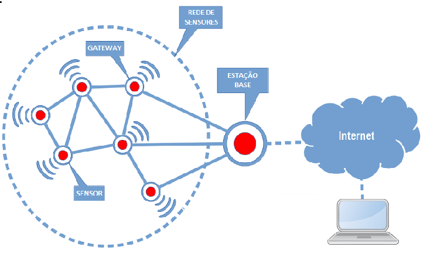

<section>
  <div class="content">
    <h1 class="title">Introdução</h1>
    <p>Na década de 1990, houve grandes avanços na área de tecnologia. A indústria de tecnologia deu um grande passo com a criação dos jogos de cartuchos, discman, mega drive, windows 95, celular “tijolão”.</p>
    <p>Além disso, houve grandes avanços na área de sensores, circuitos integrados e comunicação sem fio deram, que levou a criação de <strong>redes de sensores sem fio</strong>.</p>
    <p>Com esses avanços que ocorreram na área de microprocessadores, novos materiais de sensoriamento, microssistemas eletromecânicos (MEMS – Micro Eletromecânica Systems) e comunicação sem fio estimularam o desenvolvimento e uso de sensores “inteligentes” em áreas ligadas a processos físicos, químicos, biológicos, dentre outros.
      Podemos definir a rede de sensores sem fio como um conjunto de uma grande quantidade de nós-sensores que possuem a capacidade de se comunicarem entre si.
    </p>
    <p>As principais características de uma rede de sensores são: sensor, o observador e o fenômeno:</p>
    <ul>
      <li>O <strong>fenômeno</strong> é o objeto de estudo do observador, nesse caso é o acontecimento que está sendo monitorado pela rede.</li>
      <li>O <strong>sensor</strong> é quem faz a monitoração do fenômeno que está analisando e repassa as informações para o observador. </li>
      <li>O <strong>observador</strong> é o usuário final que deseja estudar e obter respostas sobre o fenômeno. </li>
    </ul>
    <p>Características de uma rede de sensores sem fio:</p>
    <ul>
      <li>Tolerância à falha;</li>
      <li>Escalabilidade ( µ(R) = (NΠR 2 ) / A);</li>
      <li>Custo de produção;</li>
      <li>Ambiente operacional;</li>
      <li>Restrições/limitações do hardware;</li>
      <li>Topologia de rede;</li>
      <li>Meios de transmissão;</li>
      <li>Consumo de energia.</li>
    </ul>
    <div class="img">
      
    </div>
    <div class="button">
      <a routerLink="conceito"><button pButton label="Saiba mais"></button></a>
    </div>
  </div>
</section>
